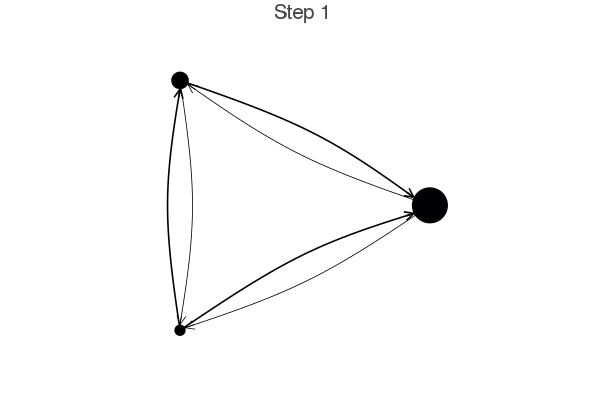

SIR model for the spread of COVID-19
SIR model
SIR model tracks the ratio of Susceptible, Infected, and Recovered individuals within a population. Here we add one more category of individuals: those who are infected, but do not know it. Transmission rate of infected and diagnosed is lower than infected and undetected. We also allow a fraction of recovered individuals to catch the disease again, meaning that recovering the disease does not bring full immunity.
Model parameters
Here are the model parameters, some of which have default values.
Ns: a vector of population sizes per city. The amoount of cities is justC=length(Ns).β_und: a vector for transmission probabilities β of the infected but undetected per city. Transmission probability is how many susceptiple are infected per day by an infected individual. If social distancing is practiced, this number increases.β_det: an array for transmission probabilities β of the infected and detected per city. If hospitals are full, this number increases.infection_period = 30: how many days before a person dies or recovers.detection_time = 14: how many days before an infected person is detected.death_rate = 0.02: the probability that the individual will die after theinfection_period.reinfection_probability = 0.05: The probabiity that a recovered person can get infected again.migration_rates: A matrix of migration probability per individual per day from one city to another.Is = [zeros(C-1)..., 1]: An array for initial number of infected but undetected people per city. This starts as only one infected individual in the last city.
Notice that all Ns, β, Is need to have the same length, as they are numbers for each city. We've tried to add values to the infection parameters similar to the ones you would hear on the news about COVID-19.
The good thing with Agent based models is that you could easily extend the model we implement here to also include age as the agent's property. This makes ABMs flexible and suitable for research of virus spreading.
Making the model in Agents.jl
We start by defining the PoorSoul agent type and the ABM
using Agents, Random, DataFrames, LightGraphs
using Distributions: Poisson, DiscreteNonParametric
using DrWatson: @dict
using Plots
mutable struct PoorSoul <: AbstractAgent
id::Int
pos::Int
days_infected::Int # number of days since is infected
status::Symbol # 1: S, 2: I, 3:R
end
function model_initiation(;Ns, migration_rates, β_und, β_det, infection_period = 30,
reinfection_probability = 0.05, detection_time = 14, death_rate = 0.02,
Is=[zeros(Int, length(Ns)-1)..., 1], seed = 0)
Random.seed!(seed)
@assert length(Ns) == length(Is) == length(β_und) == length(β_det) == size(migration_rates, 1) "length of Ns, Is, and B, and number of rows/columns in migration_rates should be the same "
@assert size(migration_rates, 1) == size(migration_rates, 2) "migration_rates rates should be a square matrix"
C = length(Ns)
# normalize migration_rates
migration_rates_sum = sum(migration_rates, dims=2)
for c in 1:C
migration_rates[c, :] ./= migration_rates_sum[c]
end
properties =
@dict(Ns, Is, β_und, β_det, β_det, migration_rates, infection_period,
infection_period, reinfection_probability, detection_time, C, death_rate)
space = Space(complete_digraph(C))
model = ABM(PoorSoul, space; properties=properties)
# Add initial individuals
for city in 1:C, n in 1:Ns[city]
ind = add_agent!(city, model, 0, :S) # Susceptible
end
# add infected individuals
for city in 1:C
inds = get_node_contents(city, model)
for n in 1:Is[city]
agent = id2agent(inds[n], model)
agent.status = :I # Infected
agent.days_infected = 1
end
end
return model
end
params = Dict(
:Ns => [5000, 2000, 1000],
# Transmission rates of the virus are generally a bit higher in more
# crowded cities (we assume people have a more "outgoing" lifestyle there)
:β_und => [0.7, 0.6, 0.5],
:β_det => [0.08, 0.06, 0.04],
# people from smaller cities are more likely to travel to bigger cities.
:migration_rates => [1 0.01 0.005;
0.015 1 0.007;
0.02 0.018 1],
)
model = model_initiation(;params...)AgentBasedModel with 8000 agents of type PoorSoul
space: GraphSpace with 3 nodes and 6 edges
scheduler: fastest
properties: Dict{Symbol,Any}(:Is => [0, 0, 1],:death_rate => 0.02,:infection_period => 30,:β_und => [0.7, 0.6, 0.5],:Ns => [5000, 2000, 1000],:migration_rates => [0.9852216748768474 0.009852216748768475 0.004926108374384237; 0.014677103718199611 0.9784735812133074 0.006849315068493152; 0.019267822736030827 0.017341040462427744 0.9633911368015414],:detection_time => 14,:reinfection_probability => 0.05,:β_det => [0.08, 0.06, 0.04],:C => 3…)Alright, let's plot the cities as a graph to get an idea how the model "looks like", using the function plotabm.
using AgentsPlots
plotabm(model)The node size is proportional to the relative population of each city. In principle we could adjust the edge widths to be proportional with the migration rates, by doing:
g = model.space.graph
edgewidthsdict = Dict()
for node in 1:nv(g)
nbs = neighbors(g, node)
for nb in nbs
edgewidthsdict[(node, nb)] = params[:migration_rates][node, nb]
end
end
edgewidthsf(s, d, w) = edgewidthsdict[(s, d)] * 100
plotabm(model; edgewidth = edgewidthsf)In the following we will be colloring each node according to how large percentage of the population is infected
infected_fraction(x) = cgrad(:inferno)[count(a.status == :I for a in x)/length(x)]
plotabm(model, infected_fraction; edgewidth = edgewidthsf)Here this shows all nodes as black, since we haven't run the model yet. Let's change that!
SIR Stepping functions
Now we define the functions for modelling the virus spread in time
function agent_step!(agent, model)
migrate!(agent, model)
transmit!(agent, model)
update!(agent, model)
recover_or_die!(agent, model)
end
function migrate!(agent, model)
nodeid = agent.pos
d = DiscreteNonParametric(1:model.properties[:C], model.properties[:migration_rates][nodeid, :])
m = rand(d)
if m ≠ nodeid
move_agent!(agent, m, model)
end
end
function transmit!(agent, model)
agent.status == :S && return
prop = model.properties
rate = if agent.days_infected < prop[:detection_time]
prop[:β_und][agent.pos]
else
prop[:β_det][agent.pos]
end
d = Poisson(rate)
n = rand(d)
n == 0 && return
for contactID in get_node_contents(agent, model)
contact = id2agent(contactID, model)
if contact.status == :S || (contact.status == :R && rand() ≤ prop[:reinfection_probability])
contact.status = :I
n -= 1
n == 0 && return
end
end
end
update!(agent, model) = agent.status == :I && (agent.days_infected += 1)
function recover_or_die!(agent, model)
if agent.days_infected ≥ model.properties[:infection_period]
if rand() ≤ model.properties[:death_rate]
kill_agent!(agent, model)
else
agent.status = :R
agent.days_infected = 0
end
end
endrecover_or_die! (generic function with 1 method)Example animation
model = model_initiation(;params...)
anim = @animate for i ∈ 1:30
step!(model, agent_step!, 1)
p1 = plotabm(model, infected_fraction; method = :circular, edgewidth = edgewidthsf)
title!(p1, "Step $(i)")
end
gif(anim, "covid_evolution.gif", fps = 5);
modelAgentBasedModel with 8000 agents of type PoorSoul
space: GraphSpace with 3 nodes and 6 edges
scheduler: fastest
properties: Dict{Symbol,Any}(:Is => [0, 0, 1],:death_rate => 0.02,:infection_period => 30,:β_und => [0.7, 0.6, 0.5],:Ns => [5000, 2000, 1000],:migration_rates => [0.9852216748768472 0.009852216748768473 0.0049261083743842365; 0.014677103718199608 0.9784735812133072 0.00684931506849315; 0.019267822736030827 0.017341040462427744 0.9633911368015414],:detection_time => 14,:reinfection_probability => 0.05,:β_det => [0.08, 0.06, 0.04],:C => 3…)
(important notice: always provide an appropriate method keyword when you want to animate ABMs)
Exponential growth
We now run the model and collect data. We define two useful functions for data collection:
infected(x) = count(i == :I for i in x)
recovered(x) = count(i == :R for i in x)recovered (generic function with 1 method)and then collect data
model = model_initiation(;params...)
data_to_collect = Dict(:status => [infected, recovered, length])
data = step!(model, agent_step!, 50, data_to_collect)
data[1:10, :]| infected(status) | length(status) | recovered(status) | step | |
|---|---|---|---|---|
| Int64 | Int64 | Int64 | Int64 | |
| 1 | 1 | 8000 | 0 | 0 |
| 2 | 1 | 8000 | 0 | 1 |
| 3 | 1 | 8000 | 0 | 2 |
| 4 | 6 | 8000 | 0 | 3 |
| 5 | 7 | 8000 | 0 | 4 |
| 6 | 15 | 8000 | 0 | 5 |
| 7 | 27 | 8000 | 0 | 6 |
| 8 | 40 | 8000 | 0 | 7 |
| 9 | 74 | 8000 | 0 | 8 |
| 10 | 138 | 8000 | 0 | 9 |
We now plot how quantities evolved in time to show the exponential growth of the virus
N = sum(model.properties[:Ns]) # Total initial population
x = data.step
p = Plots.plot(x, log10.(data[:, Symbol("infected(status)")]), label = "infected")
plot!(p, x, log10.(data[:, Symbol("recovered(status)")]), label = "recovered")
dead = log10.(N .- data[:, Symbol("length(status)")])
plot!(p, x, dead, label = "dead")
xlabel!(p, "steps")
ylabel!(p, "log( count )")
pThe exponential growth is clearly visible since the logarithm of the number of infected increases linearly, until everyone is infected.